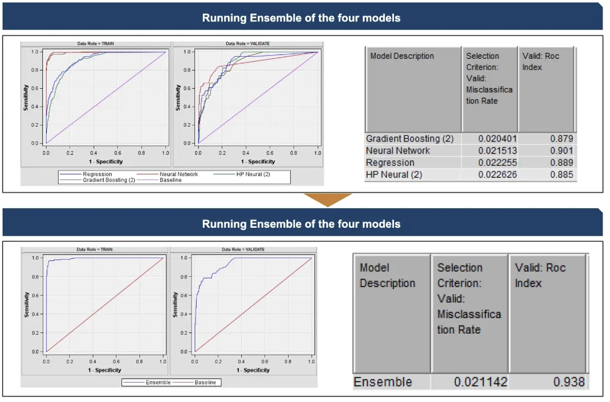

Problem Statement
Firm collapse prediction has been a subject of interest for almost a century and it still ranks high among the hottest topics in economics. The aim of predicting financial distress is to develop a predictive model that combines various econometric measures and allows one to foresee a financial condition of a firm. The purpose of bankruptcy prediction is to assess the financial condition of a company and its future perspectives within the context of longterm operation on the market.
Implementation
Data Files can be found at Kaggle
Exploratory Data Analysis
Filtering and replacement to improve the data
Importance of filtering
Importance of Replacement
Inital Model
Ensemble of the four models increase the validation ROC
Ensemble methods are machine learning techniques that combine the predictions of multiple models to make more accurate predictions. The idea behind ensemble methods is to create a strong learner by aggregating the predictions of multiple weak learners. A weak learner is a model that is slightly better than random guessing, while a strong learner is a model that performs significantly better than random guessing. There are several ways to combine the predictions of multiple models, such as averaging, voting, or weighting. The specific method used depends on the type of ensemble and the goal of the modeling.
The validation receiver operating characteristic (ROC) curve is a useful evaluation metric for imbalanced datasets because it is sensitive to the class balance of the dataset. In an imbalanced dataset, the class with a minority of instances (the “minority class”) is often the one of interest, and it is important to have a metric that can accurately evaluate the performance of a model on this class.
The ROC curve plots the true positive rate (TPR) against the false positive rate (FPR) at various classification thresholds. The TPR is the proportion of positive instances that are correctly classified as positive, while the FPR is the proportion of negative instances that are incorrectly classified as positive. The area under the ROC curve (AUC) is a measure of the overall performance of a classifier. A model with a high AUC is able to correctly classify a higher proportion of positive instances and a lower proportion of negative instances.
One advantage of using the ROC curve for evaluation is that it is not affected by the class balance of the dataset. In an imbalanced dataset, a model that simply predicts the majority class all the time can achieve a high accuracy, but this does not necessarily mean that the model is good at predicting the minority class. The ROC curve and AUC provide a more nuanced evaluation of the model’s performance, taking into account the TPR and FPR for both classes.
In summary, the validation ROC curve and AUC are useful evaluation metrics for imbalanced datasets because they are sensitive to the class balance of the dataset and provide a more nuanced evaluation of a model’s performance.
Key Takeaways
Final Model
Final Model ensembles the previously created models
Assesing Final Model
Learnings
Final Rank on Private Leaderboard
The rank on public leaderboard was 13th, and the rank on final private leader board came to be 3rd among 45 teams from Purdue University MS BAIM Program